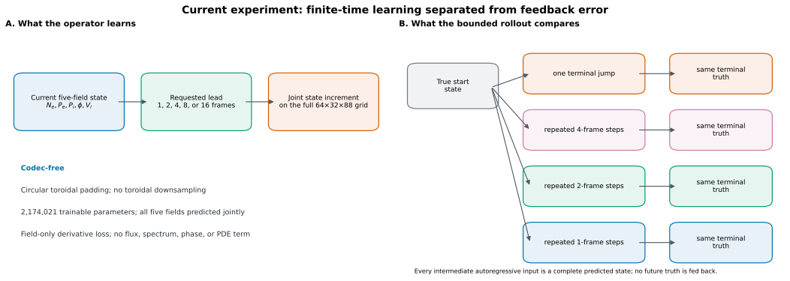
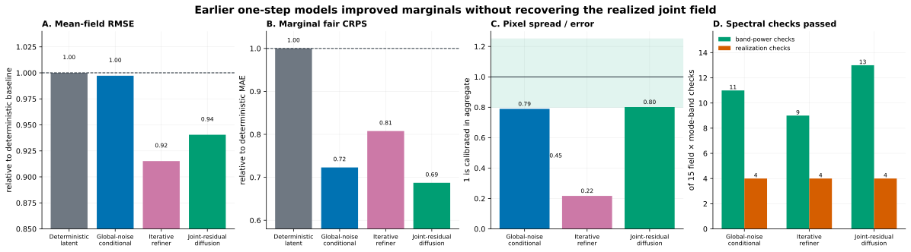
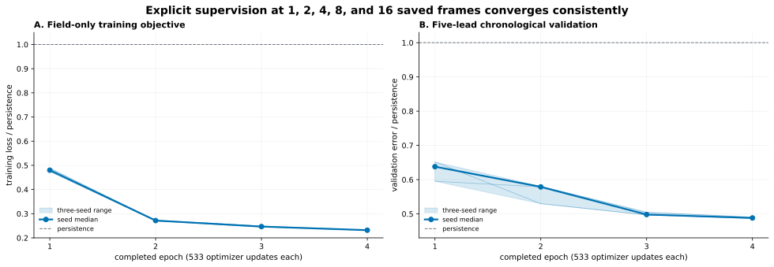
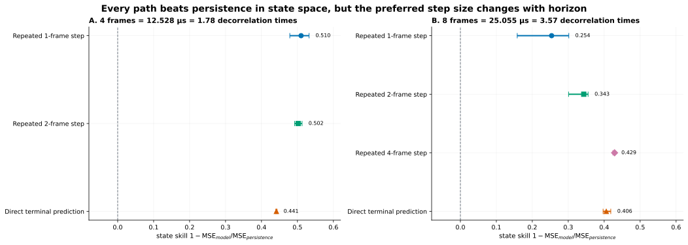
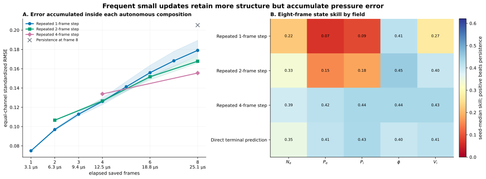
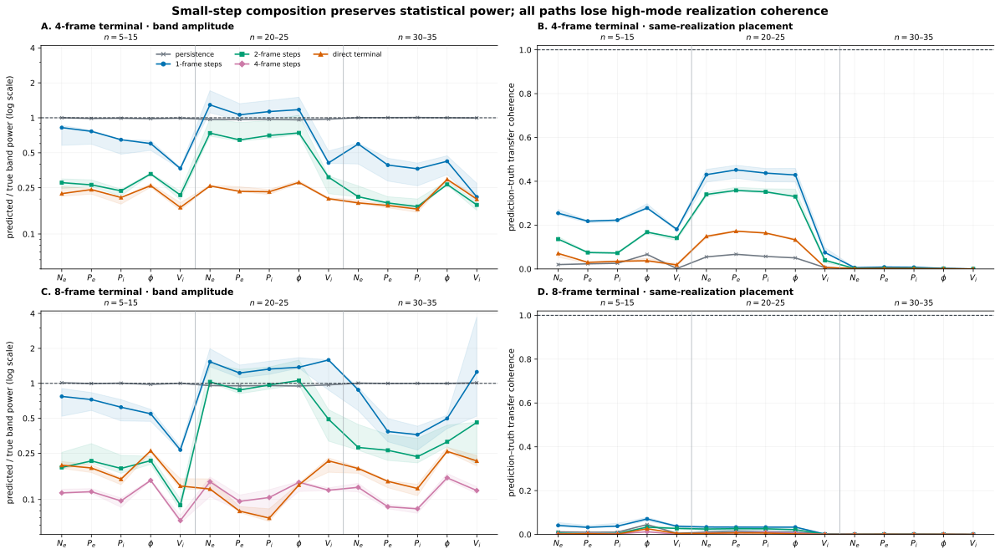
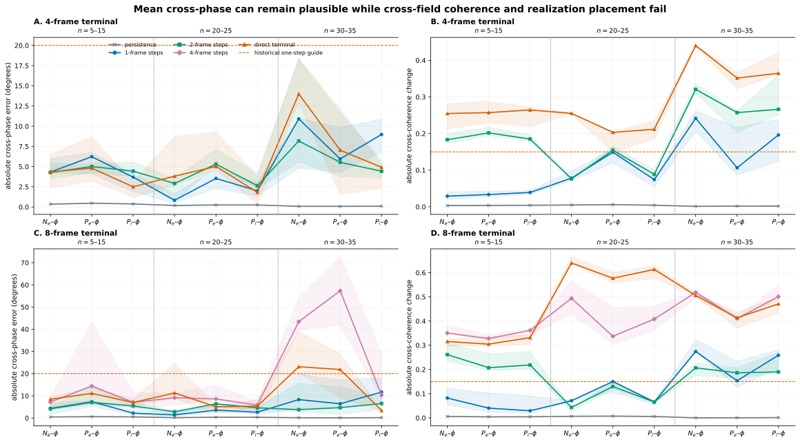
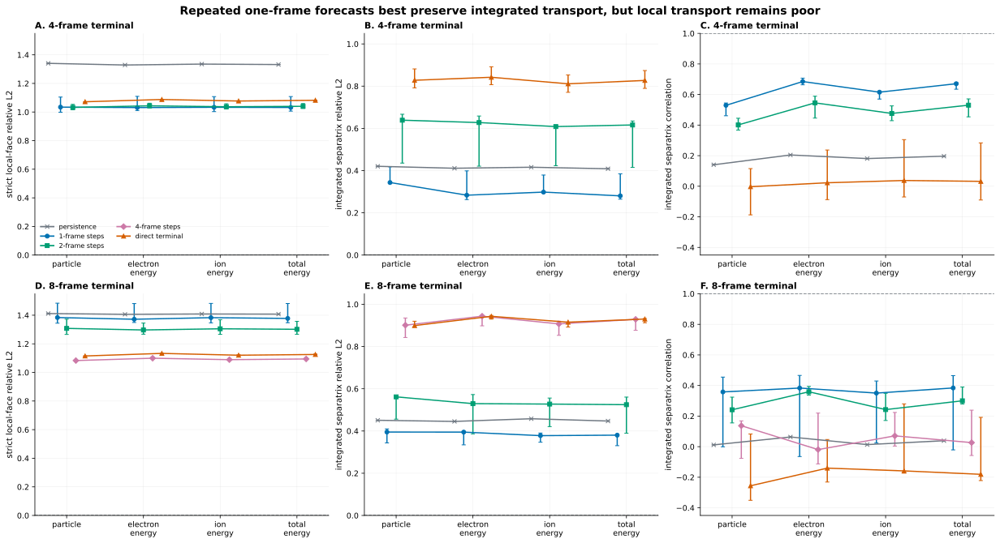
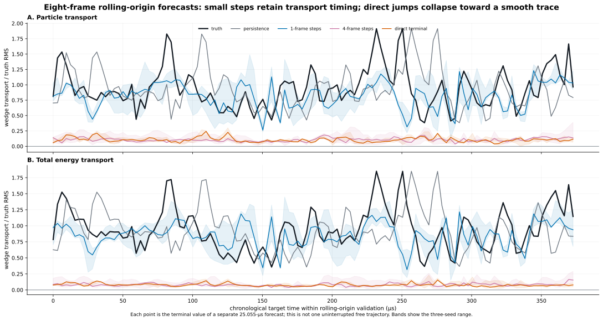
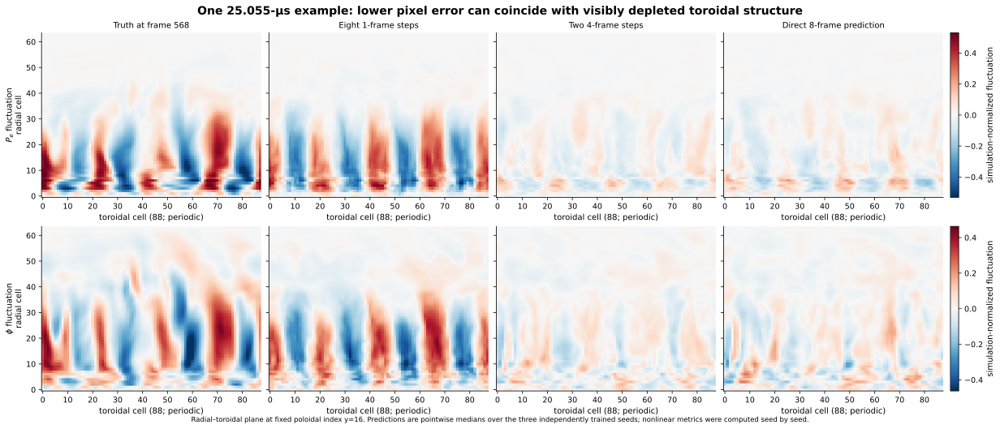

01 · One-minute answer
The model learned a useful transition, but not yet a transport-faithful emulator
- Finite-time state prediction works in aggregate. Every tested learned path has positive mean five-field skill at four and eight frames for all three training seeds. The one exception at field level is seed 1701’s eight-frame repeated one-frame path, whose Pe and Pi skills are slightly negative.
- Pixel accuracy and transport fidelity rank the paths differently. At eight frames, two four-frame steps have the best state skill, while eight one-frame steps preserve toroidal power and separatrix transport best.
- Direct long jumps behave like conditional-mean smoothers. Their average evaluated band power falls to roughly 11–17% of truth and their integrated transport error is about twice persistence.
- Small steps are the positive result, not the final answer. They improve eight-frame separatrix transport over persistence for every quantity and every seed, but local-face error remains above one and high-mode realization coherence is essentially lost.
- No assimilation claim is open. This is a deterministic three-seed study, not a calibrated forecast ensemble.
02 · Definitions and scope
Exactly what was forecast
Fields
Ne electron density; Pe electron pressure; Pi ion pressure; φ electrostatic potential; Vi parallel ion velocity. They are predicted jointly on a 64×32×88 grid.
Time
One saved frame is 3.131905 µs. Four and eight frames are 12.528 and 25.055 µs, or 1.78 and 3.56 representative decorrelation times.
Toroidal modes
The saved wedge is one fifth of the torus. Stored Fourier index k therefore maps to physical mode n=5k. The reported bands are n=5–15, 20–25, and 30–35.
State skill
Skill is 1 − model MSE / persistence MSE in training-normalized field space. Positive values beat a frozen current state; one would be exact.
Uncertainty shown
Points are medians across seeds 1701, 1702, and 1703; bands or whiskers are their minimum–maximum range. These are training replicates, not stochastic ensemble members.
Transport
The validated geometry-aware operator computes local radial face contributions and their integral over the confined separatrix in the simulated one-fifth wedge.

03 · Research arc
Why the project moved beyond marginal calibration
Earlier one-step models explored deterministic prediction, global functional noise, iterative refinement, and joint field-residual diffusion. The most probabilistically useful model improved fair CRPS and aggregate pixel spread, but every stochastic family placed only four of fifteen material spectral bands in the correct next-frame realization.

04 · Current model
A lead-time-conditioned, codec-free, toroidally equivariant transition operator
The present model predicts normalized state derivatives from one complete C5P state. It downsamples only the two nonperiodic axes, uses circular toroidal padding, and is supervised directly at leads 1, 2, 4, 8, and 16. No spectrum, phase, flux, transport, PDE, or conservation quantity appears in its loss.

05 · Autonomous state rollout
Feedback is not generically broken; composition depth matters
At four frames, repeated one- and two-frame updates outperform a direct four-frame jump. At eight frames, two four-frame updates have the lowest ordinary state error. Eight one-frame updates accumulate the largest pressure error, even though they later prove best on spectra and transport.


06 · Spectral and cross-field physics
The field-error winner is the spectral loser
Persistence nearly preserves aggregate power and mean cross-phase simply because those statistics change slowly; it does not place the future realization correctly. Repeated one-frame forecasts add genuine short-horizon placement skill and preserve much more power. Direct and four-frame paths lose most nonaxisymmetric power by the eight-frame terminal.


07 · Transport
Small steps recover useful integrated transport—but not its local spatial organization
At four frames, repeated one-frame forecasts reduce separatrix relative L2 error to 0.28–0.34 across quantities, compared with 0.41–0.42 for persistence. At eight frames, they remain better than persistence for every quantity and seed. Their strict local-face error is still about 1.38 at eight frames, so the spatial transport map is not faithful.


08 · What the terminal fields look like
The smoothing is visible before transport is calculated
The example below removes the toroidal mean at each radial cell to expose nonaxisymmetric fluctuation structure. It is a visualization of one fixed rolling-origin start, not a cherry-picked performance statistic.

09 · Decision
One next experiment: train the small-step map on its own four-step feedback
Hypothesis: the one-frame operator already preserves the transport-bearing statistics best, but it was selected only by teacher-forced direct errors. A four-step free-running, field-only fine-tune should reduce its accumulated state drift without teaching it to collapse toward a smooth long-lead conditional mean.
- Initialize from each frozen three-seed multilead checkpoint.
- Roll the one-frame map autonomously for four steps during training; never replace a predicted intermediate state with truth.
- Supervise all four true future fields only through the existing channel-normalized state loss.
- Retain a one-step term so short-horizon accuracy cannot be traded away silently.
- Select checkpoints with state-only chronological validation, then evaluate the same frozen spectral, cross-field, and transport suite.
If this does not improve four/eight-frame state stability while retaining the one-frame path’s physics, stop tuning this local deterministic operator and move to the planned nonlocal/state-complete or persistent stochastic architecture.
Supported now
- The codec-free operator learns finite-time 85604 transitions reproducibly.
- Autonomous feedback can beat direct prediction; the effect depends on learned step size.
- Field RMSE is not a valid model-selection proxy for transport.
- Small-step forecasts contain useful integrated transport information beyond persistence.
Still unsupported
- No path is transport-faithful locally.
- No deterministic seed set is a calibrated ensemble.
- No conclusion exists for 85606 or the new NERSC data.
- Assimilation, diagnostic ranking, and steering remain closed.